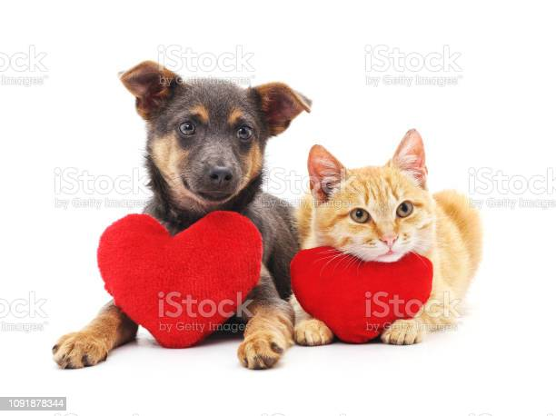
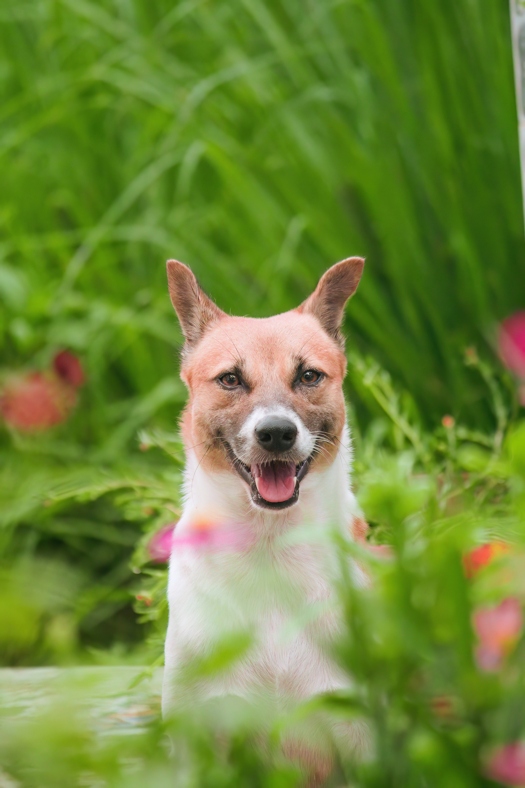

Adoção
Encontre Seu Pet metade
Responda o Quiz e descubra o tipo pets que combine com você
Que palavra define você:
Quanto tempo livre você tem por dia?:
Você quer que seu animal seja:
O que você espera do seu pet:
Para ter um pet você seria capaz de:
Gatos
Independentes, os gatos se adaptam bem à rotina dos donos que passam boa parte do tempo fora de casa. No geral, se viram bem quando estão sozinhos, mas são curiosos e exigem alguns cuidados. Raramente tomam banho, curtem passeios solitários quando moram em casas e, em apartamentos, costumam saltar em janelas e varandas, o que exige certa proteção. Além disso, é bom investir em brinquedos, que evitam desgastes nos móveis

Cães
O animal de estimação que combina com sua rotina e personalidade precisa ser dócil, inteligente e carinhoso. Como você tem tempo livre para cuidar, passear e ensinar seu pet, cachorros são as opções que mais se adaptam a sua vida, já que são animais sociáveis (com pessoas e outros tipos de animais), extremamente dependentes, ativos e gostam de brincar. A personalidade pode variar de uma raça para outra, mas no geral, ficam deprimidos quando passam muito tempo sozinhos. Vale lembrar que, antes de escolher seu amigo, cães necessitam de alimentação diária, passeios, horas de dedicação, banhos frequentes, vacinas e visitas ao veterinário.
Agora que você sabe qual pet mais combina com você, dê uma olhada nos nosso amiguinhos que estão aguardando um lar.
Entenda como funciona
Encontre seu pet
Dê uma olhada nos sites das nossas ONGs parceiras, no espaço dedicado a adoção, para criar a conexão perfeita com cão e/ou gato que busca um novo lar. Confira a lista de ONGs aqui.
Formulário
Depois que você escolher o seu pet, basta preencher o formulário que é disponibilizado no site da ONG e a mesma entrará em contato com você.
Avaliação
A ONG parceira irá fazer a análise do cadastro e perfil do adotante vs pet escolhido. Preenchendo os requisitos, você recebe a aprovação e a ONG entrará em contato com você pelo telefone cadastrado.
Adoção
Com tudo certo, você já pode ir busca seu novo amigo na ONG no dia e horário agendado.